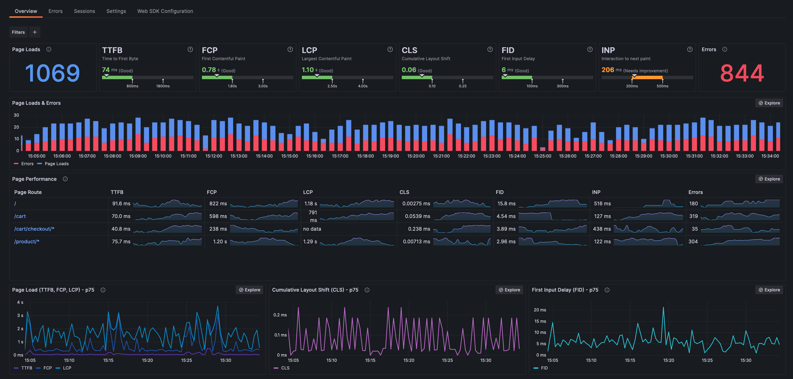

À medida que empresas em todo o mundo se esforçam para atender às crescentes demandas de conectividade e às ameaças de cibersegurança, os Centros de Operações de Rede (NOC) e os Centros de Operações de Segurança (SOC) estão evoluindo. As abordagens tradicionais, que dependiam fortemente do monitoramento humano e de processos manuais, estão sendo substituídas pela automação impulsionada por IA. O futuro dos NOCs e SOCs está em sistemas proativos, preditivos e autorreparáveis - uma transformação que promete redefinir a eficiência operacional e a resiliência.
A necessidade de mudanças nas operações NOC e SOC
A crescente complexidade das redes modernas e o aumento dos riscos de cibersegurança estão colocando uma pressão sem precedentes nas empresas. Na última década, as redes se expandiram exponencialmente com o crescimento da IoT, da computação de borda e das tecnologias 5G. Ao mesmo tempo, os ciberataques se tornaram mais sofisticados, explorando vulnerabilidades mais rapidamente do que nunca.
Atualmente, as empresas enfrentam diversos desafios:
- Sobrecarga de alertas: As equipes de segurança lidam com milhares de alertas, levando ao cansaço e à negligência de ameaças.
- Latência nas respostas: O monitoramento manual muitas vezes resulta em atrasos na identificação e resolução de problemas.
- Silos operacionais: Ferramentas e equipes desconectadas dificultam a colaboração e a coordenação efetiva.
Esses desafios geram custos tangíveis, desde danos à reputação devido a vazamentos de dados até milhões perdidos em tempos de inatividade não planejados. Resolver essas ineficiências não é mais opcional; é uma necessidade estratégica.
Como a IA e a automação transformam os NOC e SOC
A integração da IA e da automação está revolucionando o funcionamento dos NOCs e SOCs. Ao aproveitar tecnologias avançadas, as organizações podem passar de operações reativas para proativas.
- Detecção e prevenção de ameaças em tempo real
- Resposta autônoma a incidentes
- Análises preditivas e prescritivas
- Operações integradas e escaláveis
Os algoritmos de IA podem analisar o tráfego da rede e os comportamentos dos usuários em grande escala, identificando anomalias que indicam ameaças potenciais. Os modelos de aprendizado de máquina melhoram continuamente, adaptando-se a novos padrões de ataque.
Por exemplo, a IA preditiva pode detectar um ataque de ransomware antes que ele criptografe dados críticos.
Impacto: Redução dos tempos de resposta a violações em até 95% e minimização das interrupções operacionais.
A automação elimina a necessidade de intervenção humana em tarefas repetitivas, como bloquear IPs maliciosos ou isolar dispositivos infectados. Playbooks pré-programados garantem respostas consistentes e imediatas às ameaças.
Ferramentas impulsionadas por IA fornecem insights acionáveis, prevendo falhas de rede ou vulnerabilidades. Essa capacidade permite que as organizações solucionem problemas antes que eles ocorram, otimizando a alocação de recursos e minimizando riscos.
As plataformas modernas de IA unificam as funções de NOC e SOC, eliminando silos e proporcionando uma visão holística das operações. Esses sistemas se integram perfeitamente às ferramentas legadas e plataformas de nuvem, escalando conforme a rede cresce.

A IA e a automação não estão apenas transformando os NOCs e SOCs - elas estão redefinindo a maneira como as empresas se protegem, se adaptam e prosperam em um mundo hiperconectado.
Tayroni Campos | CEO Norton-Gauss
A vantagem competitiva da IA nos NOC e SOC
Adotar IA e automação é mais do que uma atualização técnica; é um habilitador estratégico. Empresas que adotam essas tecnologias relatam benefícios tangíveis:
- Eficiência de custos: Automatizar tarefas repetitivas reduz os custos operacionais em 30-50%.
- Segurança aprimorada: A IA minimiza falsos positivos, concentrando recursos em ameaças genuínas.
- Resiliência empresarial: As capacidades preditivas permitem que as organizações mantenham o tempo de atividade e atendam aos SLAs.
Essas melhorias se traduzem diretamente em melhores experiências para os clientes, maior confiança e uma vantagem competitiva no mercado.
O que vem a seguir? A era da hiperautomação
O futuro dos NOCs e SOCs reside na hiperautomação - uma sinergia de IA, aprendizado de máquina, automação robótica de processos (RPA) e análises avançadas. Essa abordagem de próxima geração permitirá:
- Redes autorreparáveis:
- Mitigação adaptativa de ameaças:
- Integração abrangente do ecossistema:
Sistemas que diagnosticam e resolvem problemas automaticamente sem intervenção humana.
IA que aprende em tempo real, evoluindo mais rápido do que os atacantes.
Da nuvem à borda, a hiperautomação garante uma coordenação perfeita entre plataformas.
Organizações visionárias já estão explorando essas inovações para preparar suas operações para o futuro.
Como a Norton-Gauss pode ajudar
A Norton-Gauss está na vanguarda dessa transformação, oferecendo soluções impulsionadas por IA adaptadas às operações de NOC e SOC. Nossa expertise abrange:
- Implementações personalizadas de IA:
- Estratégias de automação ponta a ponta:
- Serviços gerenciados 24/7:
Projetadas para se integrar perfeitamente às ferramentas e fluxos de trabalho existentes.
Abrangendo tudo, desde a detecção até a remediação.
Garantindo monitoramento contínuo e suporte para operações globais.
Nossa abordagem combina um profundo conhecimento do setor com tecnologia de ponta, capacitando as empresas a prosperar em um cenário digital cada vez mais complexo.
Tags:
Compartilhar:
Informações de mídia
- media@nortongauss.com
Data de publicação
- 22 de outubro de 2024
Tags
Autores
 Tayroni Campos | Global CEO
Tayroni Campos | Global CEO Lyuobv Fihun | EU Sales Director
Lyuobv Fihun | EU Sales Director Amy B. Smith | UK Consultant
Amy B. Smith | UK Consultant
Redes sociais

Comments - 03
-
-
Reply

Tamzyn French
September 23, 2023We realised we really wanted to catch a glimpse of what went on behind the scenes of the companies we looked up to.
-
-
Reply

Oscar Newman
September 23, 2023We realised we really wanted to catch a glimpse of what went on behind the scenes of the companies we looked up to.
Ponnappa Priya
September 23, 2023We realised we really wanted to catch a glimpse of what went on behind the scenes of the companies we looked up to.